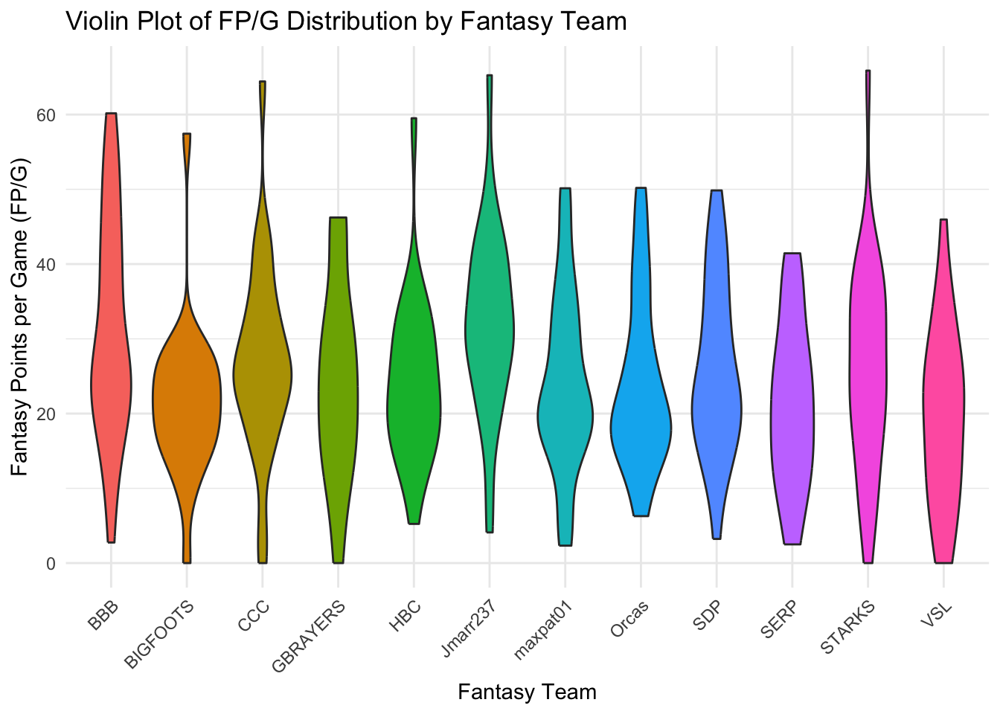
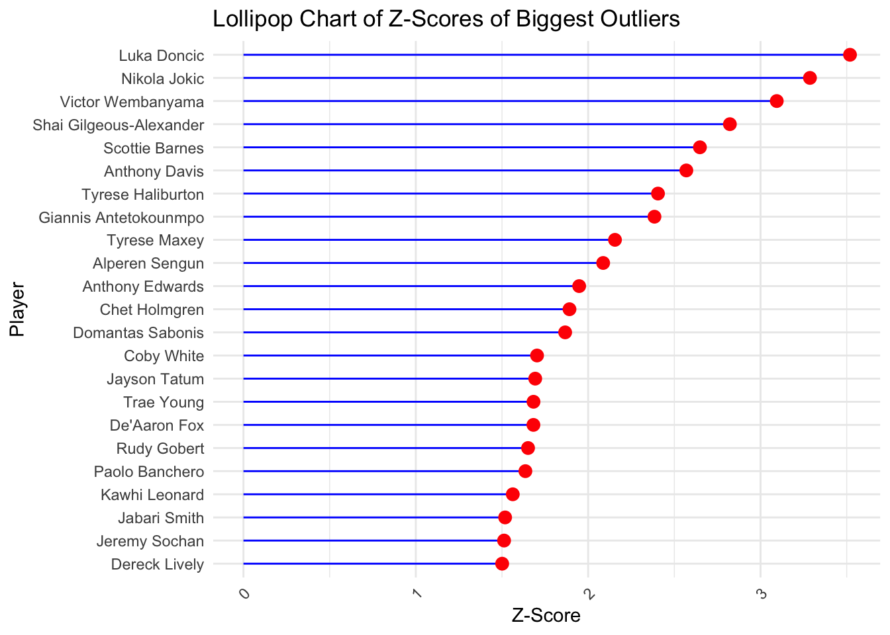

# Installing necessary libraries
library(tidyverse)
library(dplyr)
library(janitor)
library(here)
library(ggthemes)
library(ggridges)HW2 Exploration
Part 2a
# Import data
fantrax_feb1_raw = read.csv(here('data/fantrax_2_1_24.csv'))
# Update column names
feb1_data = fantrax_feb1_raw %>%
rename(fantasy_team = Status) %>%
clean_names() Wrangling
Luckily, the data is pretty clean already so not many updates need to be made. I will remove players that are not on a roster in the fantasy league to clean up the data and allow the analysis to be honed.
# List of fantasy team abbreviations
teams_in_league <- c("CCC", "HBC", "BBB", "STARKS", "Jmarr237", "Orcas", "VSL", "GBRAYERS", "BIGFOOTS", "SDP", "maxpat01", "SERP")
# Filtering data for only players that are rostered
rostered_players <- feb1_data %>%
filter(fantasy_team %in% teams_in_league) EDA
Box plot of average fantasy points per player on each fantasy team.
ggplot(rostered_players, aes(x = fantasy_team, y = fp_g)) +
geom_boxplot() +
labs(title = "Box Plot of FP/G for Each Fantasy Team",
x = "Fantasy Team",
y = "Fantasy Points per Game (FP/G)") +
theme(axis.text.x = element_text(angle = 45, hjust = 1))
Violin:
ggplot(rostered_players, aes(x = fantasy_team, y = fp_g, fill = fantasy_team)) +
geom_violin() +
labs(title = "Violin Plot of FP/G Distribution by Fantasy Team",
x = "Fantasy Team",
y = "Fantasy Points per Game (FP/G)") +
theme_minimal() +
theme(axis.text.x = element_text(angle = 45, hjust = 1),
legend.position = "none")
Lollipop:
# Calculate Z-scores within each age group
rostered_players <- rostered_players %>%
group_by(age) %>%
mutate(z_score = scale(f_pts))
# Define the threshold for outliers
outlier_threshold <- 1.5
# Filter and print the biggest outliers for each age group
outliers <- rostered_players %>%
filter(abs(z_score) > outlier_threshold) %>%
arrange(age, desc(abs(z_score))) %>%
filter(z_score > 0)Warning: Using one column matrices in `filter()` was deprecated in dplyr 1.1.0.
ℹ Please use one dimensional logical vectors instead.# Print the biggest outliers by age group
outliers %>%
select(age, player, z_score) %>%
print(n = Inf)# A tibble: 23 × 3
# Groups: age [14]
age player z_score[,1]
<int> <chr> <dbl>
1 19 Dereck Lively 1.50
2 20 Victor Wembanyama 3.09
3 20 Jabari Smith 1.52
4 20 Jeremy Sochan 1.51
5 21 Alperen Sengun 2.09
6 21 Chet Holmgren 1.89
7 21 Paolo Banchero 1.64
8 22 Scottie Barnes 2.65
9 22 Anthony Edwards 1.95
10 23 Tyrese Haliburton 2.41
11 23 Tyrese Maxey 2.16
12 23 Coby White 1.70
13 24 Luka Doncic 3.52
14 25 Shai Gilgeous-Alexander 2.82
15 25 Jayson Tatum 1.69
16 25 Trae Young 1.68
17 26 De'Aaron Fox 1.68
18 27 Domantas Sabonis 1.87
19 28 Nikola Jokic 3.29
20 29 Giannis Antetokounmpo 2.38
21 30 Anthony Davis 2.57
22 31 Rudy Gobert 1.65
23 32 Kawhi Leonard 1.56# Sort the outliers df in descending order of Z-scores
sorted_outliers <- outliers %>%
arrange(desc(z_score))
# Create a lollipop chart
lollipop_chart <- ggplot(sorted_outliers, aes(x = reorder(player, z_score), y = z_score)) +
geom_segment(aes(xend = player, yend = 0), color = "blue") +
geom_point(color = "red", size = 3) +
coord_flip() + # Flip the coordinates for horizontal layout
labs(title = "Lollipop Chart of Z-Scores of Biggest Outliers",
x = "Player",
y = "Z-Score") +
theme_minimal() +
theme(axis.text.x = element_text(angle = 45, hjust = 1))
# Print the lollipop chart
print(lollipop_chart)
Histograms
# Filter players with more than 20 fp_g
filtered_players <- rostered_players %>%
filter(fp_g > 20)
# Calculate the mean Z score for each fantasy team
mean_z_scores <- filtered_players %>%
group_by(fantasy_team) %>%
summarize(mean_z_score = mean(z_score, na.rm = TRUE)) %>%
arrange(mean_z_score)
# Join the mean Z score data with the filtered players data
filtered_players_joined <- filtered_players %>%
inner_join(mean_z_scores, by = "fantasy_team")
# Create the ridge plot
ridge_plot <- ggplot(filtered_players_joined, aes(x = z_score, y = fct_reorder(fantasy_team, mean_z_score))) +
geom_density_ridges() +
labs(title = "Distribution of Z Scores for Each Fantasy Team (Players with >20 FP/G)",
x = "Z Score",
y = "Fantasy Team") +
theme_minimal()
# Print the ridge plot
print(ridge_plot)Picking joint bandwidth of 0.381Warning: Removed 2 rows containing non-finite values (`stat_density_ridges()`).
Part 2b
1. What have you learned about your data? Have any potentially interesting patterns emerged? (5-8 sentences)
After doing some EDA, I have found that the data is clean and easy to work with overall. I have been able to identify some initial trends across fantasy teams: which teams have the best fantasy players and which NBA players are the most valuable compared to players the same age as them. Since the league is a dynasty format, it will be important to consider fantasy points and age when doing analysis to understand teams and their potential. So far, most things I feel like I know about the league have been furthered by the visuals: which teams are the strongest/weakest this season, which players are the most valuable and impressive for their age group, and which teams have the best depth of talent. I have learned that I will likely need to transform the data to incorporate age and fantasy scoring.
2. In HW #1, you outlined some questions that you wanted to answer using these data. Have you made any strides towards answering those questions? If yes, how so? If no, what next steps do you need to take (e.g. I need to create X plot type, I still need to track down Y data, I need to restructure existing data so that you can visualize it in Z ways, etc.)?
I have made some strides in determining which teams are better this season when interpreting on fantasy scoring distribution visuals. Further, I think that the ridge plot of z-scores is a good start in understanding which teams have the best value of player for their age. However, it does not take into account the fact that older players that perform better than the typical players that age are not as valuable as similarly rated players in younger age brackets. As a result, I think adding color would be an interesting way to incorporate this age dynamic into the visual. I will also want to consider other types of plots to show the value of younger players, and I will need to do more research and work with Sam and Sevan to dig deeper into this. I think it will benefit me to come up with some custom stats and methods to better quantify the importance of age, and then incorporate these methods into visuals in order to visualize more interesting and relevant information. I think the ridge plot is a really solid way to visualize the value across teams, since the 12 teams in the league fit nicely in the plot. Overall, I think I am on the right track to paint a picture of the league, but will need to do more thinking and processing of the data to better incorporate age and fantasy scoring into the visuals.
3. What challenges do you foresee encountering with your data? These can be data wrangling and / or visualization challenges.
There is not a lot of data that I will be working with, which makes it more complicated to identify and create aesthetic visualizations. Also, there is more data that I will want to clean up but did not get around to in this EDA: players who have been injured all season or who are in the ‘Minors’ roster spots and do not contribute to fantasy team success this year. As I move forward with the analysis, it will be important to remove these values to better visualize the data that actually matters. Additionally, the roster sizes in the league are pretty large with 22 active players, 3 minors slots, and 2 injured reserve slots. Therefore, there are many times where there will not be room in the starting lineup (10 players) for players who have low fantasy point per game averages. As a result, more weight should be placed on the best players on each roster who are sure to start every game. I will need to